01 · INTRODUCTION
Overview
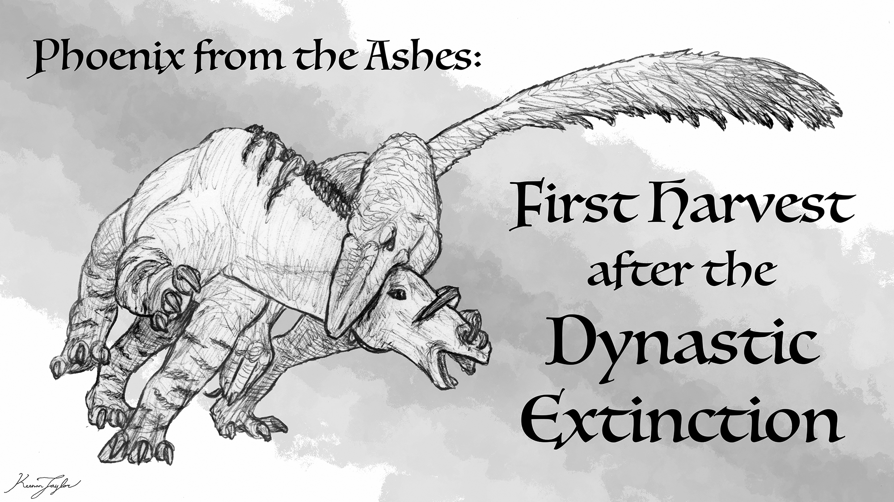
The Middle Miocene Harvest represents one of the most consequential biological introductions in the geological history of Kaimere. Occurring approximately 14.2 million years ago, following the devastation of the Dynastic Extinction, this harvest introduced an extensive assemblage of western North American plants and animals into the recovering ecosystems of the Known World. Unlike earlier harvests, which frequently introduced relatively isolated groups of organisms into ecosystems already dominated by established native lineages, the Middle Miocene Harvest occurred under circumstances approaching ecological reconstruction. The preceding extinction had destroyed much of the biodiversity within the Portal's former territory, leaving extensive ecological vacancies across terrestrial, freshwater, and marine environments. Although native plants and animals had begun recolonizing the region, their populations remained comparatively impoverished, and the ecological structure of the Known World bore little resemblance to the mature ecosystems that had existed during the Tyrant Dynasty.
The harvest consequently introduced an unusually large proportion of the organisms that would define the subsequent development of the Known World's ecosystems. Among these were gomphotheres, rhinoceroses, horses, camels, chalicotheres, tapirs, amphicyonids, barbourofelids, procyonids, and numerous smaller mammals. Marine introductions were equally consequential, bringing cetaceans, pinnipeds, sirenians, and other marine mammals into coastal ecosystems that had been substantially disrupted by the preceding volcanism. Several groups established extensive evolutionary radiations, while others disappeared within comparatively short geological intervals. The introduction of new flowering plants and grasses was particularly significant, as it accelerated the transition toward angiosperm-dominated ecosystems throughout much of the Known World.
The harvest also coincided with a fundamental restructuring of the relationship between mammals and dinosaurs. During the Tyrant Dynasty, large mammals had generally occupied subordinate positions beneath the dominant dinosaurian megafauna. Although several mammalian lineages had independently evolved into large herbivores and predators, their diversity and ecological influence remained limited compared with those of hadrosaurs, titanosaurs, ceratopsians, and tyrannosaurs. The Dynastic Extinction disrupted this arrangement. Many of the specialized dinosaurian families disappeared, while surviving dinosaurs were initially represented by relatively small animals. The incoming mammals therefore encountered an ecological landscape in which they could expand into large-bodied niches without immediately confronting the immense diversity of the previous dinosaurian megafauna.
For approximately half a million years following the harvest, mammals became the dominant large terrestrial animals throughout much of the Known World. This interval, subsequently associated with the early Warring Clades period, represents one of the few occasions in Kaimere's history when mammals temporarily approached or exceeded dinosaurs in their influence over terrestrial megafaunal communities. The period was not, however, a permanent mammalian ascendency. Native dinosaurian lineages recovered rapidly, and several theropod groups underwent substantial increases in body size. By the time the next major ecological restructuring occurred, approximately twelve million years ago, the brief predominance of the Middle Miocene mammals had largely ended.
Nevertheless, the legacy of the harvest extended considerably beyond its initial ecological dominance. Numerous mammalian families that remain important components of modern Kaimere originated from its introductions, while several of its plants became foundational elements of the modern vegetation of Pakardia and the Known World. In certain isolated regions, particularly the western forests of Arvel, descendants of the original North American fauna remain among the most conspicuous representatives of the surviving Middle Miocene assemblage.
02 · Environment before the harvest
Geological and Environmental Context
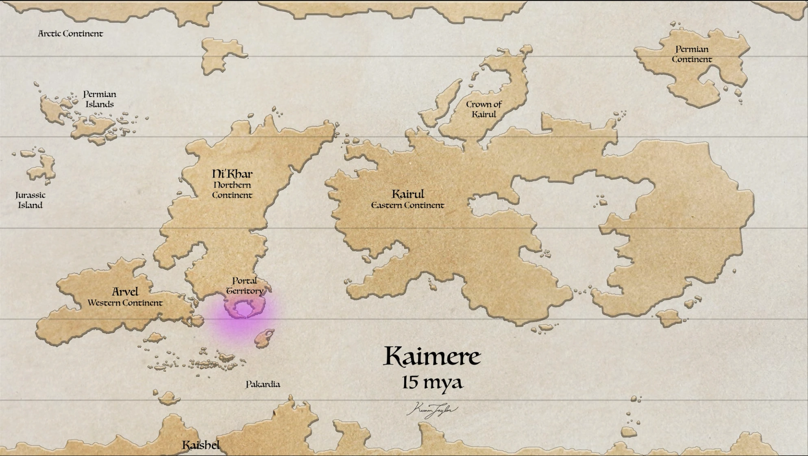
Approximately fifteen million years ago, Kaimere underwent one of the most destructive geological episodes in its recorded natural history. The Pakardio-Khalin plate that would eventually form Pakardia and the Khalin Islands advanced northward and collided with the margins of the Known World. The resulting tectonic displacement forced the Arvelith plate northward into Ni'Khar, which at the time contained the principal territory of the Portal. The collision generated extensive geological disruption, exposing large regions of the planet's interior and producing enormous outpourings of basaltic lava.
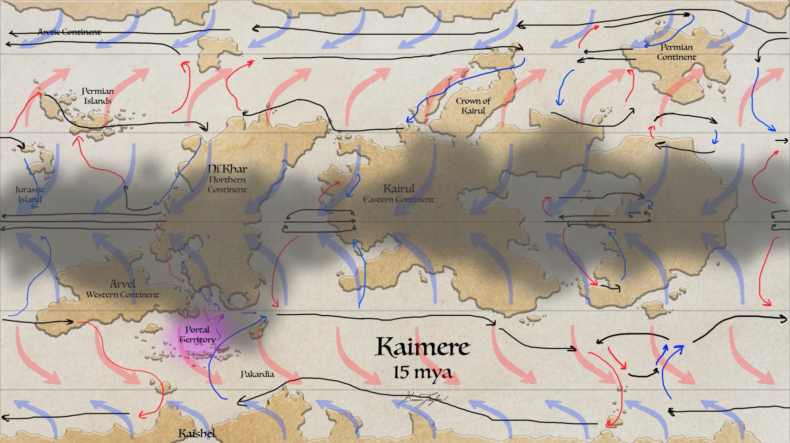
The resulting flood-basalt volcanism was considerably more extensive than the earlier volcanic episodes associated with the Oligocene Harvest. Large portions of the Known World were subjected to intense volcanic activity, atmospheric contamination, and widespread destruction of terrestrial vegetation. Ash clouds and associated climatic disturbances devastated existing ecosystems, while the direct effects of volcanism eliminated enormous numbers of animals and plants. The Portal itself suffered catastrophic losses among its biological populations, and the territory that had sustained the ecological prosperity of the Tyrant Dynasty was transformed into a largely uninhabitable landscape.
The devastation was particularly severe across the regions corresponding to modern Qajar and the Imperial Lands. These areas would eventually become among the most biologically productive regions of the Known World, a condition sometimes attributed to the enormous quantities of mineral nutrients released by the volcanic deposits. The decomposition of ancient enchanted vegetation, potentially extending back to the occupation of these territories by the First Children, may also have contributed to their subsequent fertility. The precise relationship between these processes remains uncertain, although the geological foundations for the modern productivity of these regions were established during this period.
The extinction was not restricted to the Portal's territory. Kaimere experienced widespread ecological disruption, and several continental ecosystems underwent substantial reductions in biodiversity. Nevertheless, the Known World suffered disproportionately because of its direct exposure to the volcanic activity and its proximity to the tectonic collision. For several hundred thousand years, the region remained a biological shadow of its former condition.
The Portal required approximately half a million years to recover sufficiently to resume its ecological activity. During this interval, surviving native organisms recolonized the devastated territories, and numerous small-bodied generalists underwent rapid adaptive radiations. These organisms were initially responsible for restoring the basic ecological functions of the recovering landscape. However, they were unable to immediately reconstruct the complex communities of large herbivores, predators, and specialized vegetation that had characterized the previous dynasty.
The geological consequences of the collision also fundamentally altered the Portal's geographical position. Rather than returning to its previous territory in Ni'Khar, the entity eventually moved southward, establishing itself near the confluence of Pakardia, Ni'Khar, and Arvel. The precise circumstances surrounding this displacement remain unknown. Nevertheless, its new position gave it access to an unusually extensive range of environments, including tropical forests, temperate woodlands, highlands, open grasslands, deserts, freshwater systems, and coastal marine habitats.
By approximately 14.2 million years ago, the recovering Known World had developed sufficient ecological stability to support another major harvest. The Portal's biological territory remained comparatively impoverished, but the combination of surviving native organisms, newly established vegetation, and numerous vacant ecological niches provided the conditions for an extensive introduction of foreign life.
03 · Range of the Portal
Chronology and Geographic Extent of the Harvest
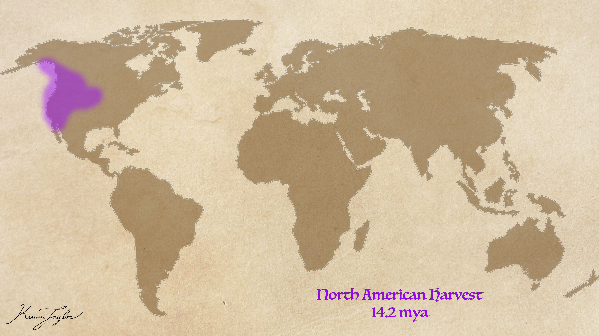
The Middle Miocene Harvest originated primarily from western North America, encompassing the Pacific coastal regions and extending approximately one thousand miles inland. This geographical distribution allowed the Portal to collect organisms from an extensive variety of ecological environments. The source region included humid coastal forests, woodland environments, increasingly open grasslands, montane habitats, freshwater systems, and marine ecosystems extending from tropical to cool-temperate waters.
The geographical breadth of the harvest was particularly important because the Known World itself possessed considerable environmental diversity. Although much of its terrestrial environment was warmer and wetter than contemporary North America, its continental extent and climatic gradients provided habitats suitable for numerous introduced organisms. The western and southern portions of Arvel contained extensive forests and open woodland mosaics, while Ni'Khar supported a mixture of humid forests, wetlands, and comparatively open northern territories. The surrounding seas provided additional opportunities for marine organisms, particularly cetaceans and other animals that had previously been absent or poorly represented in the recovering ecosystems.
The harvest is understood to have been a relatively concentrated event rather than a prolonged sequence of introductions. Although the Portal may have collected organisms from different environments over a short interval, the overwhelming majority of the associated fauna and flora appear within a relatively consistent geological horizon. The subsequent half-million years witnessed extensive diversification among the introduced organisms, making it necessary to distinguish between the original harvested species and their rapidly evolving Kaimeran descendants.
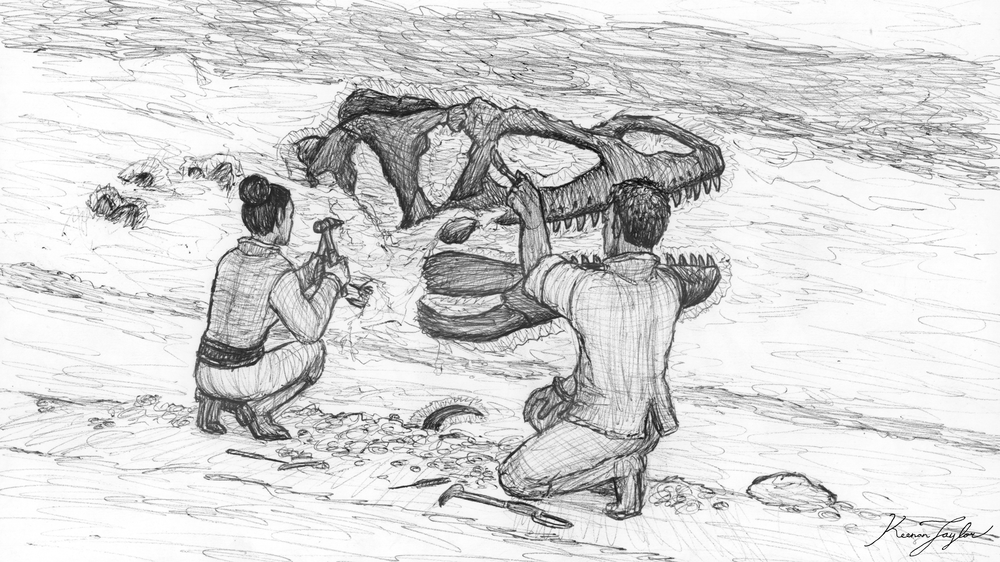
Establishing the precise composition of the harvest remains difficult. As with other ancient harvesting events, the Portal itself is not directly preserved in the geological record. Instead, palaeontologists reconstruct the event through the first appearances of foreign organisms, their subsequent geographical dispersal, and the geological dating of their earliest Kaimeran representatives.
The Great Library's extensive fossil collections have been particularly important in establishing this chronology. Although its annual palaeontological expeditions are relatively few compared with those conducted by modern human institutions, the Library has accumulated specimens over thousands of years. Its records are especially valuable for the geological formations immediately following the Dynastic Extinction, where the unusually rapid appearance of numerous mammalian and botanical lineages can be documented. Collaboration with human palaeontologists during the past century has further improved the identification of the original Earth lineages and their relationships to modern Kaimeran organisms.
04 · Expansion of Angiosperms
Botanical Introductions
One of the most important consequences of the Middle Miocene Harvest was the extensive introduction of flowering plants. Although previous harvests had brought angiosperms to Kaimere, particularly those associated with the late Cretaceous and Oligocene introductions, gymnosperms continued to dominate many terrestrial environments. The ecological disruption preceding the Middle Miocene Harvest created opportunities for flowering plants to expand into habitats that had previously been occupied by established gymnosperm communities.
The introduction of North American vegetation accelerated this process considerably. The Known World was already experiencing a transition toward warmer and wetter climatic conditions, and the abundance of recovering forests and wetlands provided favorable environments for numerous incoming angiosperms. Rather than simply supplementing existing vegetation, these plants became important components of the ecological reconstruction following the extinction.
Among the most successful introductions were several trees that would eventually become characteristic elements of modern Kaimere's forests.
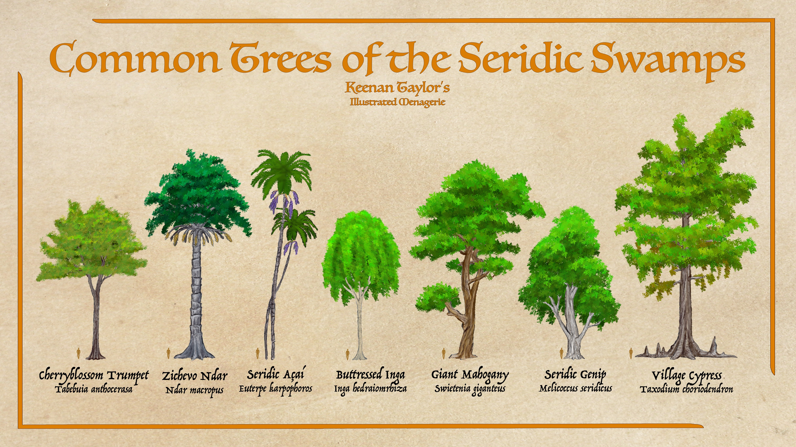
Bald cypress, Taxodium, is believed to have been among the earliest and most consequential botanical introductions. Its descendants eventually developed into the village cypress, Taxodium choriodendron, one of the characteristic trees of the Seridic wetlands. The humid conditions prevailing during the early post-extinction interval provided exceptionally favorable circumstances for the establishment of these trees. Extensive wetlands across Ni'Khar and Arvel offered suitable environments for rapid population expansion, allowing cypress forests to become widespread within a comparatively short geological interval. Whether the original bald cypress populations survived continuously through subsequent ecological turnovers or were replaced by rapidly expanding descendant populations remains uncertain. Nevertheless, the modern abundance of village cypress in the Seridic wetlands demonstrates the long-term success of this introduction.
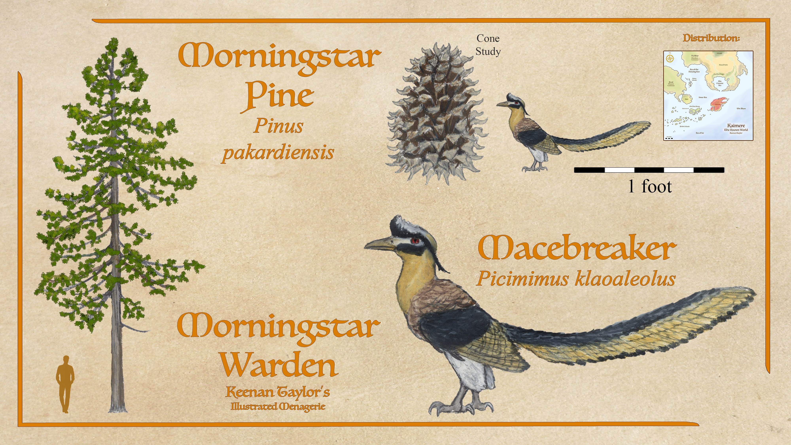
Additional North American conifers were also harvested, including representatives of the Trifoliae subgroup of Pinus. These plants eventually contributed to the evolution of the modern Morningstar pines, particularly Pinus pakardiensis, which became an important component of Pakardiant forests. Their descendants are also associated with the temperate and montane environments of Kaishel, where they form part of the distinctive coniferous vegetation of the region.
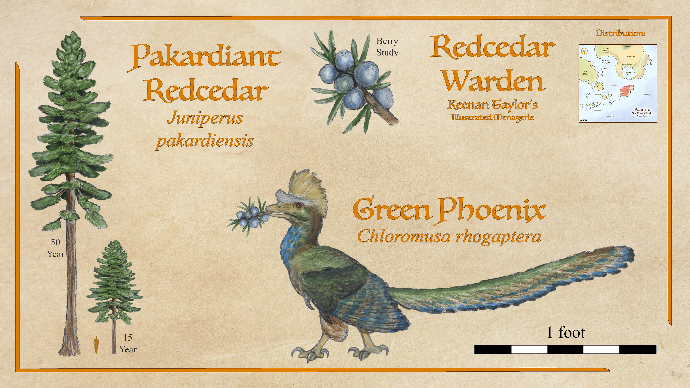
Modern redcedars likewise possess ancestry traceable to this harvest. The Pakardiant redcedar, Juniperus pakardiensis, represents one of the surviving descendants of these North American introductions. Its eventual distribution reflects the ability of these conifers to exploit the climatic and geographical diversity created by the developing Pakardiant landmass.
The botanical consequences extended beyond the survival of individual tree lineages. The increasing representation of flowering plants altered the structure of recovering terrestrial ecosystems, providing new food resources and establishing vegetation communities capable of supporting large populations of herbivorous mammals. The subsequent success of horses, camels, rhinoceroses, tapirs, and gomphotheres was closely associated with the expansion of these newly established plant communities.
Grasslands were also introduced and expanded during this interval, although their eventual ecological importance should not be confused with their initial distribution. At the time of the harvest, the Known World remained considerably more forested than contemporary North America. Open habitats existed, particularly in northern Ni'Khar and parts of southern Arvel, but extensive continuous grasslands were not yet a dominant feature of the landscape. The subsequent development of the Houze prairie and other major grassland systems occurred much later.
05 · Plant-eater Introductions
Terrestrial Herbivorous Mammals
The terrestrial mammals introduced during the Middle Miocene Harvest represented an unusually broad selection of North American Cenozoic fauna. Their ecological success was determined largely by the climatic differences between their original habitats and the recovering environments of Kaimere.
During the Middle Miocene, North America was undergoing a long-term transition toward cooler and increasingly open environments. Grasslands were expanding, many forest ecosystems were contracting, and numerous mammalian lineages were becoming increasingly specialized for life in open terrain. Kaimere was experiencing a substantially different environmental trajectory. Its Known World was becoming warmer and wetter, and tropical and temperate forests occupied much of its terrestrial surface.
This difference in environmental conditions favored animals associated with woodland, forest, and wetland habitats over those specialized for increasingly open environments. Several of the most successful introduced mammals were consequently those that could exploit dense vegetation, abundant freshwater, and extensive forest margins.
Many of the harvested animals failed to establish lasting populations. Disease, small founding populations, competition with native organisms, and unsuitable habitats all contributed to the disappearance of numerous introduced lineages. Nevertheless, the overall success of the harvest was extraordinary. Within approximately half a million years, mammals from North America represented a substantial proportion of the large-bodied terrestrial fauna throughout the Known World.
Proboscideans and the Gomphothere Radiation
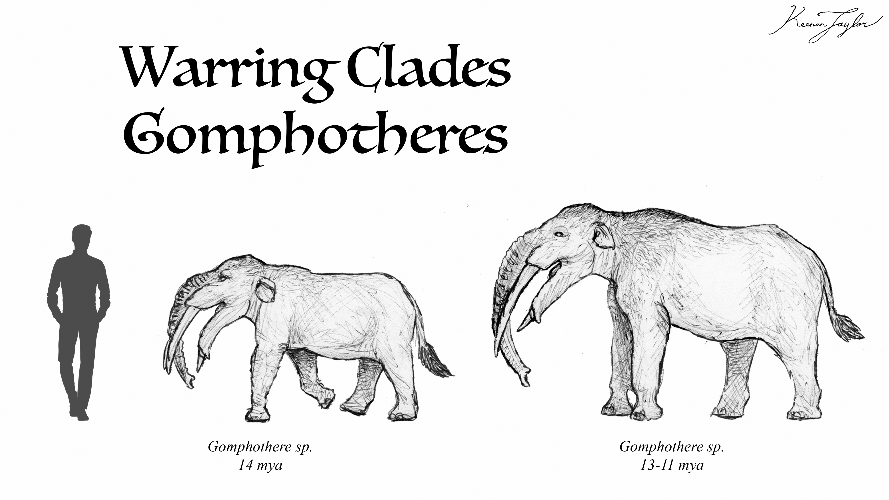
The most conspicuous large herbivores introduced during the harvest were the gomphotheres, the first proboscideans conclusively documented in Kaimere.
The precise chronology of proboscidean dispersal into North America remains uncertain. However, the gomphotheres associated with the earliest Kaimeran deposits are generally considered representatives of relatively early North American populations, possibly among the pioneers of the group's expansion across the continent. Their introduction to Kaimere occurred during a period when large terrestrial herbivores were particularly uncommon, giving them access to an extensive range of ecological opportunities.
Early Assembly naturalists referred to these animals as oliphaunts, employing the archaic English term for elephants. The name distinguished the unfamiliar four-tusked animals from true elephants, particularly because of the distinctive ivory-bearing lower jaws. Although the scientific term gomphothere eventually became standard during the early twentieth century, oliphaunt remains in use among some Assembly naturalists as a general designation for proboscideans possessing lower-jaw tusks.
Gomphotheres were exceptionally adaptable animals. Their relatively generalized feeding strategies, capacity for long-distance movement, and ability to exploit a variety of woodland and wetland environments allowed them to spread rapidly throughout the recovering Known World. They encountered few native mammals capable of competing with them for large-herbivore resources, and the surviving dinosaurian herbivores were still recovering from the extinction.
Ni'Khar proved particularly favorable. Its extensive wetlands, forest margins, and relatively open northern territories supported large populations, and gomphotheres became the most common large mammals across considerable portions of the continent. Their abundance was not simply a consequence of their large body size, but of their ability to exploit an ecological landscape in which many of their potential competitors had disappeared.
For a brief interval, gomphotheres were the heaviest terrestrial animals in the Known World. Their predominance was eventually challenged by the rapid expansion of chalicotheres, which developed into considerably larger forms, and by the increasing size of terrestrial mammalian predators. Nevertheless, the initial gomphothere radiation established a foundation for the later success of proboscideans throughout Kaimere.
Their evolutionary history would extend well beyond the initial harvest. Unlike several other North American introductions, gomphotheres demonstrated a remarkable capacity for geographical dispersal. Their descendants eventually expanded beyond the original territory of the Portal, reaching Kairul and spreading through the developing continental and island systems. Their subsequent evolutionary history would become one of the most extensive among the introduced mammalian groups.
Perissodactyl Radiation
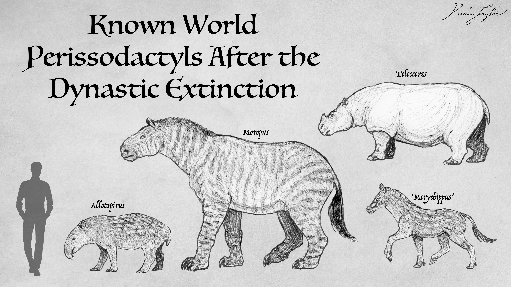
Rhinoceroses were another important component of the harvest, although their initial ecological influence was less conspicuous than that of the gomphotheres and chalicotheres. The introduced assemblage contained numerous species, most of which were adapted to woodland and forest environments.
Among the most significant introductions were animals comparable to Teleoceras. These rhinoceroses belonged to an independently evolved semiaquatic lineage within Rhinocerotidae, distinct from the semiaquatic rhinocerotoids that had been introduced during the Oligocene Harvest. Their presence demonstrates that aquatic specialization among rhinoceroses was not restricted to a single evolutionary lineage in Kaimere.
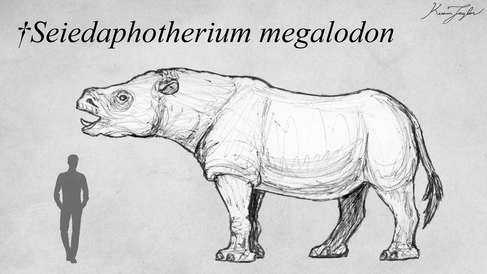
The harvest also included the small rhinoceros Menoceras, tentatively interpreted as a representative of an early elasmothere lineage. Its identification is unusually secure for an introduction this far back in Kaimere's geological record. Numerous bone beds containing exceptionally complete specimens have been recovered from formations immediately following the harvest, and their anatomical characteristics correspond closely with North American material assigned to the same genus.
Most of the introduced rhinoceroses were forest specialists or generalist browsers. Their success reflected the abundance of woody vegetation and the comparatively limited competition from other large mammalian herbivores during the immediate aftermath of the extinction. Although they never became as numerous as gomphotheres, they established several enduring lineages.
The Harvest introduced a considerably more recognizable assemblage of horses than the earlier Oligocene introductions. Although the majority of the incoming horses retained three functional toes, many already possessed the characteristic spring-foot adaptations associated with modern equids. Their limbs were increasingly specialized for efficient terrestrial locomotion, allowing them to move rapidly across open ground and woodland mosaics.
The genus Hipparion was among the most successful introductions. These horses retained three toes, but their locomotor adaptations allowed them to exploit open environments with considerable efficiency. Their initial success was facilitated by the scarcity of specialized open-terrain predators in the recovering Known World. At the time, extensive grasslands were relatively uncommon, but the northern territories of Ni'Khar and the western reaches of Arvel contained considerable areas of open woodland and mixed vegetation. These environments supported populations of cursorial herbivores without requiring the extensive continuous grasslands that would become characteristic of later Kaimere. The ability of hipparion horses to exploit these transitional environments allowed them to establish populations across a broad geographical range. Their relatively efficient locomotion provided an advantage in areas where predators were still predominantly adapted to ambush hunting or the pursuit of smaller prey.
Other horses introduced during the harvest occupied more specialized niches. Small forms such as Archaeohippus retained relatively primitive body proportions and were primarily associated with woodland environments. Their appearance differed considerably from that of modern horses, and their relationships would not necessarily have been immediately obvious to observers unfamiliar with equid evolution. The introduction of these horses was especially important because the Oligocene lineages had already established a substantial mammalian presence in Kaimere. The Middle Miocene assemblage therefore did not simply introduce horses into an unfamiliar ecological system; it expanded an existing evolutionary radiation with additional forms capable of exploiting different vegetation structures and locomotor environments.
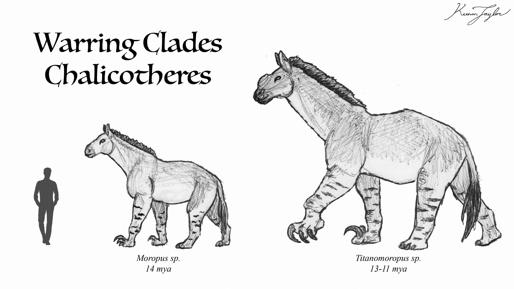
The Harvest also marks the first conclusive introduction of chalicotheres to Kaimere. Among the most important was the genus Moropus, which became one of the most successful large mammalian herbivores of the early post-extinction period. Chalicotheres possessed an unusual combination of anatomical characteristics, including powerful forelimbs, elongated claws, and relatively specialized feeding adaptations. Their distinctive anatomy allowed them to exploit vegetation in ways unavailable to most conventional ungulates.
On Earth, Moropus represented one of the more recognizable members of the chalicothere radiation. In Kaimere, however, its descendants encountered conditions particularly favorable to evolutionary expansion. The genus initially became established throughout both Arvel and Ni'Khar, which at the time remained geographically separated. Ni'Khar supported substantial populations, but Arvel eventually became the principal center of chalicothere diversity. The extensive forests of the western and central portions of the continent provided suitable habitat, while the relatively limited competition from other large mammals allowed populations to expand rapidly. Within approximately half a million years, some chalicotheres had become considerably larger than their original Earth ancestors. They also began occupying ecological positions previously associated with the enormous herbivores of the Tyrant Dynasty.
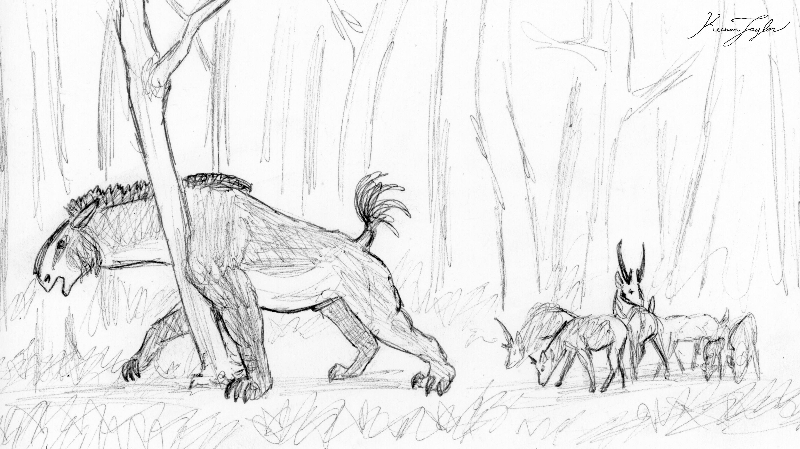
Their ecological influence extended beyond conventional herbivory. Like the titanosaurs that had dominated earlier forest ecosystems, large chalicotheres became important agents of vegetation modification. Their feeding behavior and physical strength allowed them to manipulate woody vegetation, break branches, and modify the structure of forest understories. In certain environments, they effectively cultivated the forests according to their own requirements. The schizotheriine genus Titanomoropus eventually emerged from this radiation. Its members became among the most successful representatives of the chalicothere lineage, demonstrating the extraordinary evolutionary potential of a group that had been introduced during the initial reconstruction of the Known World's ecosystems.
The success of chalicotheres also provides an important contrast with the earlier Oligocene brontotheres. Both groups represented large-bodied mammals entering ecosystems dominated by dinosaurs, but chalicotheres encountered a substantially altered competitive environment. Their initial success was supported by the extinction of many large dinosaurian herbivores, the abundance of forest vegetation, and the relative scarcity of large mammalian competitors.
Tapirs were another significant introduction and became among the most abundant mammals of the early post-extinction Known World. The introduced animals were broadly similar to modern tapirs, retaining many of the anatomical characteristics associated with the modern family while possessing certain primitive and distinctive features. The Kaimeran genus Allotapirus, common in formations dating to the immediate aftermath of the harvest, has sometimes been incorporated into Tapirus in taxonomic analyses. Most of its distinguishing characteristics fall within the range of anatomical variation observed among living tapirs.
The extraordinary abundance of Allotapirus is reflected in the fossil record. Hundreds of skeletons have been recovered from deposits associated with this period, an especially remarkable occurrence given the generally unfavorable conditions for fossil preservation in humid tropical forests and wetlands. The abundance of these specimens suggests that tapirs were among the most numerous large and medium-sized mammals in the recovering ecosystems. Their ability to exploit dense vegetation, aquatic margins, and forest understories made them particularly successful in the humid conditions prevailing throughout much of Ni'Khar and Arvel.
Unlike the cursorial horses, which benefited from the limited extent of open habitats, tapirs flourished precisely because forests and wetlands remained the dominant terrestrial environments. Their success was consequently representative of the broader ecological direction of the Known World during this period.
Artiodactyl Radiation
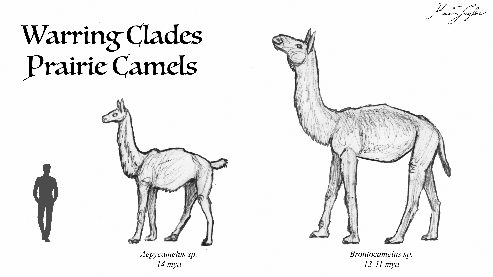
Camelids and oreodonts were among the other major mammalian groups introduced during the harvest. Although neither group initially matched the abundance or size of the gomphotheres and chalicotheres, both became important components of the recovering terrestrial ecosystems.
Camels were particularly successful in the more open regions of Ni'Khar and southern Arvel. Their adaptability allowed them to exploit environments ranging from open woodland to grassland and mixed vegetation. Unlike some of the more specialized incoming herbivores, they were not restricted to extensive continuous grasslands. The genus Aepycamelus was particularly successful. Its descendants rapidly increased in both size and abundance, especially within northern Ni'Khar. The region's mixture of open ground, woodland, and scattered forests provided a suitable environment for these animals, allowing them to establish substantial populations despite the relatively limited extent of true prairie.
Oreodonts were also introduced during the harvest. These animals occupied a range of herbivorous niches and contributed to the diversification of the recovering mammalian communities. Their relatively generalized feeding adaptations allowed them to exploit a variety of vegetation types, particularly in woodland and open-forest environments.
Both groups would subsequently undergo additional evolutionary changes as the Known World's climate and vegetation continued to fluctuate. Their initial introduction, however, established the foundations for their later participation in the increasingly complex mammalian communities of Kaimere.
06 · Meat-eater introductions
Terrestrial Carnivorous Mammals
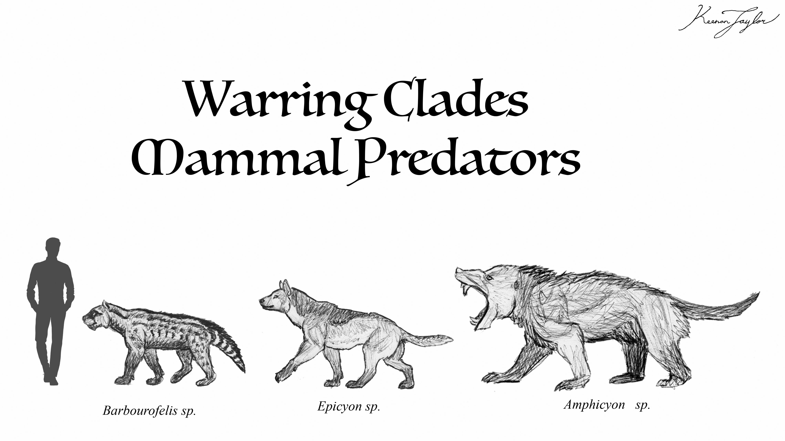
The Middle Miocene Harvest introduced a substantially more diverse assemblage of terrestrial predators than had existed in the recovering Known World immediately before the event. These included amphicyonids, barbourofelids, machairodont cats, canids, procyonids, mustelids, and pseudaelurid-grade feliforms.
Their success was closely associated with the sudden abundance of large and medium-sized herbivores. The incoming gomphotheres, chalicotheres, rhinoceroses, horses, and camels provided an extensive prey base, allowing predators to establish populations in environments where the surviving native carnivores were still comparatively small.
The absence of many large dinosaurian predators during the immediate aftermath of the Dynastic Extinction also provided opportunities for mammalian carnivores to expand beyond the ecological roles they had occupied during earlier periods.
Amphicyonids
Among the most important predators introduced during the harvest were the amphicyonids, commonly referred to as bear-dogs. The North American assemblage included representatives of Amphicyon, Epicyon, and other carnivorous mammalian lineages. These animals were particularly successful in forested environments, where their combination of powerful jaws, substantial body size, and terrestrial mobility allowed them to exploit a wide range of prey.
The largest amphicyonids were already formidable animals at the time of introduction. Some approached half a ton in body mass, making them among the largest terrestrial mammalian predators in the recovering Known World. Their success continued as prey populations expanded and competition remained comparatively limited. Over subsequent generations, amphicyonids increased in size and ecological specialization, eventually producing some of the largest terrestrial carnivorous mammals in the history of Kaimere.
The later species Amphicyon dirus, associated with the Early Warring Clades period, is widely regarded as the largest strictly carnivorous terrestrial mammal known from either Earth or Kaimere. The largest estimates place it well above one ton, representing an extraordinary expansion from the original North American stock.
Barbourofelids and Machairodonts
Barbourofelids and machairodonts were also introduced during the harvest. These animals occupied predominantly predatory niches and possessed anatomical adaptations suited to capturing and subduing relatively large prey.
Their initial success was associated with the abundance of forest-dwelling herbivores, particularly the smaller rhinoceroses, horses, and tapirs. Their specialized predatory adaptations allowed them to exploit prey that could be difficult for less specialized carnivores to capture. Although these groups were important components of the incoming predator assemblage, their subsequent histories were more complicated. Competition with expanding mammalian predators and the eventual recovery of large theropods created increasingly complex ecological relationships.
Procyonids and Pseudaelurid-Grade Cats
Among the smaller carnivorous mammals, procyonids and pseudaelurid-grade cats were particularly successful. Procyonids, the group that includes modern raccoons and coatis, became some of the most successful small mammalian predators in the Known World immediately following the harvest. Their relatively generalized feeding strategies allowed them to exploit numerous food resources, including small vertebrates, invertebrates, and other available animal matter. Their ability to occupy varied habitats gave them an advantage over several more specialized small carnivores. Fossil material indicates that procyonids became widespread across both Arvel and Ni'Khar, establishing populations that would eventually contribute to the diversity of modern Kaimeran carnivorous mammals.
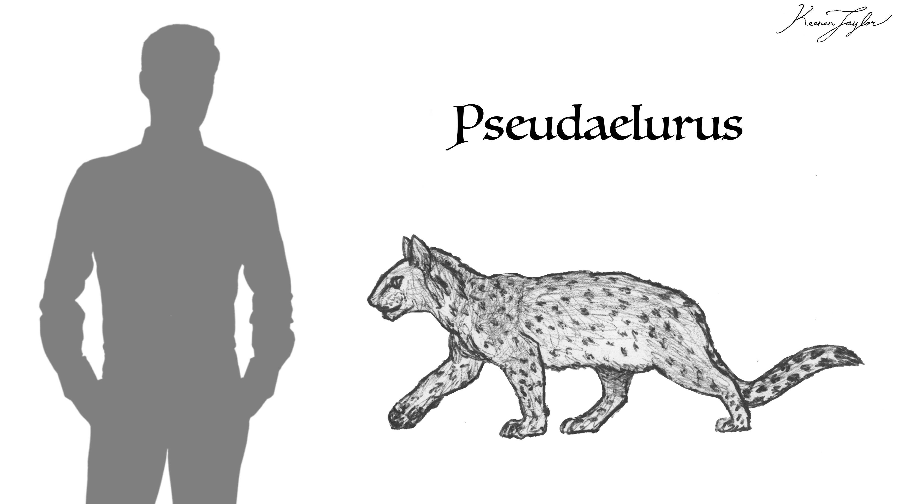
Pseudaelurid-grade cats were similarly successful. Fossils attributed to these animals have been recovered from both continents, suggesting that they dispersed rapidly after their introduction. They were particularly effective small predators and appear to have contributed to the ancestry of several modern Kaimeran feliform lineages.
Their success contrasts sharply with that of the true mustelids introduced during the same event. Although mustelids are conclusively represented in the North American harvest assemblage, they appear to have remained comparatively uncommon in the Known World. Some populations may have disappeared entirely during the subsequent ecological turnovers.
The reasons for this disparity remain uncertain. It has sometimes been suggested that the predominantly forested conditions of the Known World favored procyonids and small cats over mustelids, although disease, competition, population size, and chance may also have contributed.
07 · Lizards, Snakes, and Crocodiles
Reptilian Introductions
The harvest was not restricted to mammals and flowering plants. Several reptiles were also introduced, including representatives of the alligator genus Alligator.
These animals established populations in freshwater environments throughout the recovering Known World. Their introduction added to the diversity of crocodilian predators already present in Kaimere and provided another group capable of exploiting the extensive wetlands that developed following the Dynastic Extinction.
Their subsequent success was comparatively limited, however. Later harvesting events introduced additional crocodilian lineages, and the ecological restructuring associated with these introductions reduced the relative importance of the original alligator populations.
08 · Whales, Sirenians, and Pinnapeds
Marine Mammalian Introductions
The marine component of the Middle Miocene Harvest was among its most consequential and enduring contributions to Kaimere's biodiversity.
The volcanic activity associated with the Dynastic Extinction had devastated large portions of the coastal marine ecosystems. Although some sharks and marine reptiles had survived or recolonized the affected waters, the marine food webs remained substantially disrupted. Earlier marine mammal introductions from the Oligocene Harvest had established a limited presence, but the scale of the preceding ecological destruction created opportunities for a much broader radiation.
The recovering coastal seas possessed abundant nutrients and substantial populations of small fish and crustaceans. The absence of established filter-feeding communities was particularly important. These conditions allowed newly introduced cetaceans to exploit resources that had previously been underutilized.
Baleen Whales
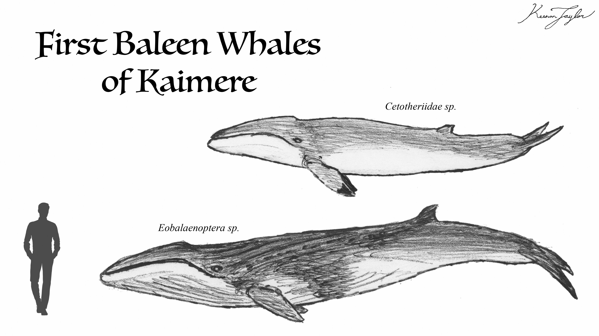
The harvest introduced both cetotheres and rorqual whales, which rapidly expanded into the recovering marine ecosystems. The abundance of small shrimp and bait fish provided an extensive food resource, supporting substantial populations of filter-feeding cetaceans. Both groups were successful, although cetotheres ultimately became the more diverse and ecologically influential lineage.
Their advantage appears to have been associated with their relatively versatile feeding strategies. While rorquals depended more heavily on concentrated prey aggregations, cetotheres were capable of exploiting a broader range of feeding opportunities. The comparatively warm conditions of Kaimere and the distribution of its marine productivity did not consistently provide the dense prey concentrations that favored rorquals in Earth's colder waters.
Rorquals nevertheless established successful populations, but their evolutionary radiation remained relatively limited. Cetotheres, by contrast, produced several enduring families. Among their descendants are the benthic bilyuk, the surface-skimming common whale, a more generalized feeder capable of employing several different feeding strategies.
These lineages demonstrate the considerable evolutionary potential of the original cetothere introductions. Their descendants adapted to different ecological positions within Kaimere's increasingly productive marine environments, eventually becoming important components of its coastal and inland marine ecosystems.
Eurhinodelphines and Other Toothed Whales
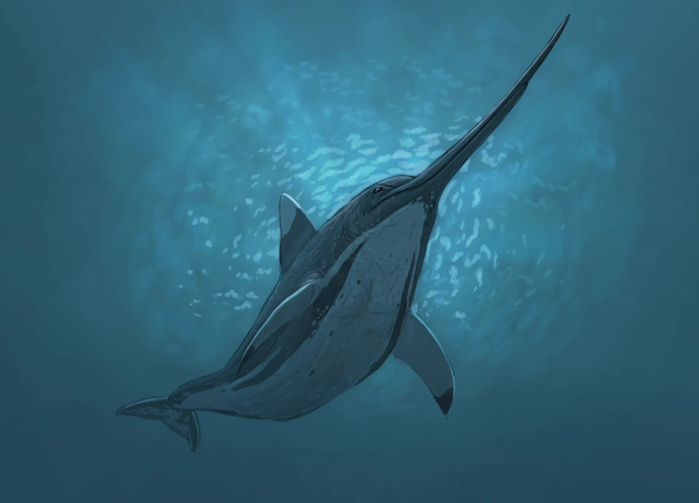
Toothed whales also benefited from the abundance of small marine prey. Eurhinodelphines were particularly successful. These long-snouted cetaceans possessed adaptations for capturing fish and other relatively small marine animals, and their fossils are common in formations associated with the early post-harvest period.
Their presence is particularly interesting because eurhinodelphines have not been conclusively documented from the Pacific regions of Earth. Their introduction therefore raises questions concerning the geographical extent of the original harvest.
One possibility is that their North American distribution was considerably broader than the terrestrial fossil record currently indicates. The incomplete nature of Earth's marine fossil record, combined with the absence of a continuous land connection between North and South America during much of the relevant interval, makes such an interpretation plausible. Alternatively, the Portal may have harvested organisms from a wider geographical region than previously assumed.
Although eurhinodelphines eventually declined, they remained abundant and diverse for several million years. Their eventual disappearance was associated with the development of the inland sea and the increasing competition provided by mosasaurs and dolphins.
Only one known descendant survives in the Known World: the ogul, a relatively rare benthic-feeding s inhabiting the Arvelith basin wetlands. Its persistence represents the final surviving branch of an otherwise highly successful radiation.
Walruses and Plotopterids
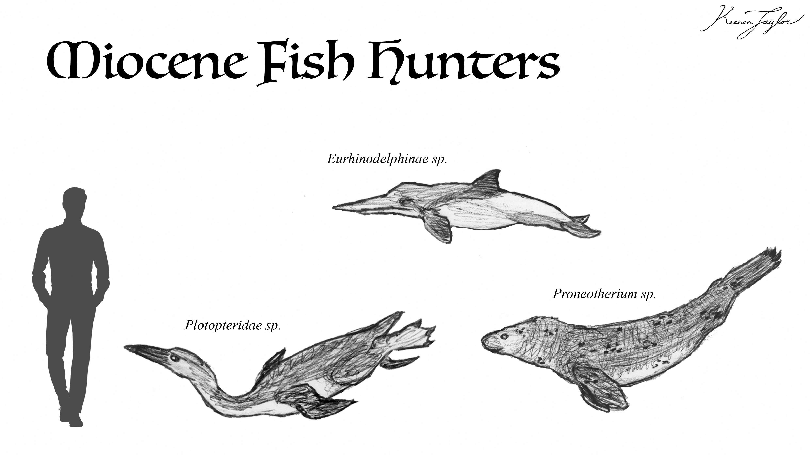
The Harvest also introduced early walruses, including fossils assigned to Proneotherium and several other basal members of the group. These animals initially occupied marine environments as fish hunters. Their subsequent evolutionary success was limited by the ecological conditions prevailing during the early post-extinction period, but their descendants would become increasingly important as Kaimere's inland sea became shallower and its marine habitats underwent substantial restructuring.
Competition from plotopterids was particularly significant. Plotopterids were large marine birds resembling darters and other diving birds. Their Earth representatives were already approaching extinction during the relevant period, but their introduction to Kaimere provided an opportunity for a temporary evolutionary resurgence. For several million years, they became successful marine predators, exploiting fish populations and occupying ecological positions that would later be increasingly dominated by pinnipeds. The eventual consolidation of the inland sea into a predominantly shallow-water ecosystem favored the walrus and pinniped lineages, while the plotopterids gradually lost their competitive advantage.
Sirenians and Desmostylians
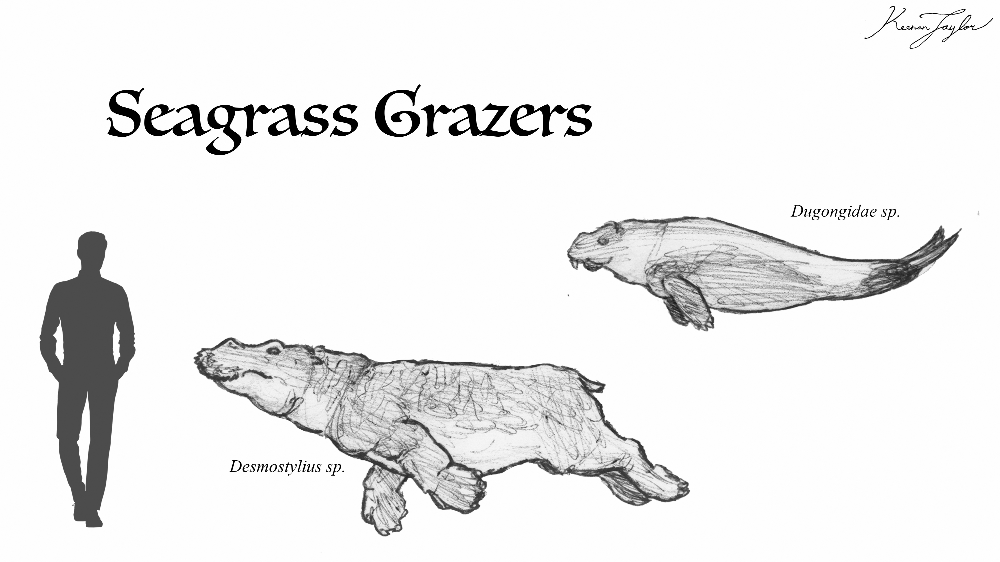
The harvest also introduced Kaimere's first conclusively identified sirenians and additional desmostylians. Both groups exploited the developing seagrass communities of the coastal waters. Seagrass grazing was not entirely new to Kaimere, and the extensive meadows characteristic of the modern Trakaiam Sea had not yet developed. Nevertheless, the available vegetation provided sufficient resources to support substantial populations of aquatic herbivorous mammals.
Desmostylians benefited from their ability to rest on islands and other relatively secure coastal environments. This behavior provided protection from marine predators and allowed them to exploit shallow-water feeding grounds with comparatively limited exposure to predation.
Sirenians, by contrast, were more capable swimmers and consequently achieved a wider geographical distribution. Their ability to move between coastal feeding grounds and exploit different seagrass communities allowed them to establish populations across a broader range of marine environments.
The coexistence of these groups represents an important stage in the development of Kaimere's marine herbivore communities. Their subsequent evolutionary histories were closely associated with the expansion of seagrass ecosystems, particularly as the Trakaiam Sea underwent its transition toward the extensive shallow-water meadows that characterize it today.
Macroraptorial Sperm Whales and Squalodonts
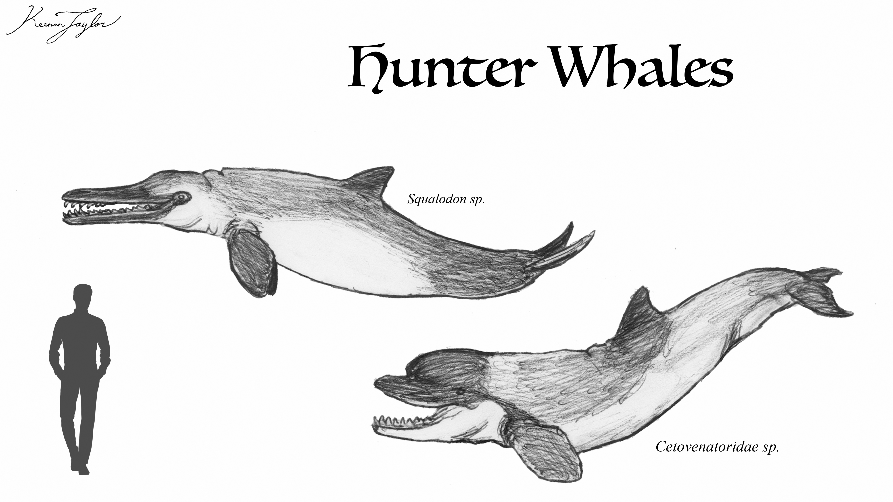
The abundance of marine mammals and other small prey attracted several larger cetacean predators. Among the introduced animals was a macroraptorial sperm whale approximately five meters in length, closely resembling Acrophyseter. This animal specialized in hunting other cetaceans and occupied an important position within the developing marine predator community.
Squalodonts were also introduced during the harvest. These toothed whales were closely related to the early evolutionary radiation of dolphins and possessed relatively generalized predatory adaptations. Their introduction was particularly significant because the genus was approaching extinction on Earth. Kaimere provided an opportunity for a renewed evolutionary expansion, supported by abundant prey and comparatively limited competition during the initial stages of the marine ecosystem's recovery.
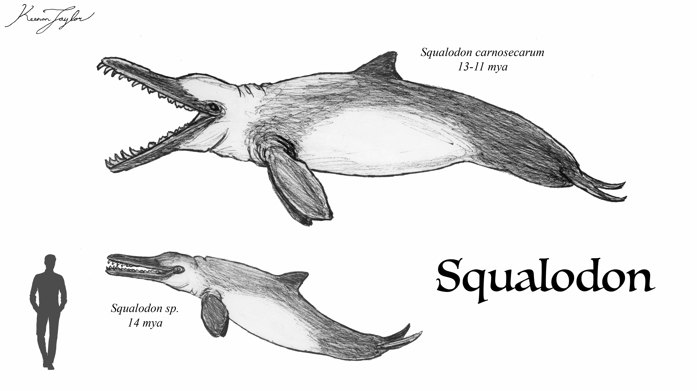
The lineage eventually produced Squalodon carnosecarum, the largest and final representative of its genus. Reaching approximately nine meters in length, this species became one of the most successful generalist marine predators of the early Warring Clades period. Its diet included smaller cetaceans, walruses, desmostylians, sirenians, and other marine animals that it could capture and process. Its versatility allowed it to exploit a broad range of prey and become the most common large marine predator in the coastal waters for more than a million years.
Its eventual decline was associated with the emergence of increasingly powerful marine competitors and the subsequent ecological transformation of the inland sea.
09 · Mosasaurs, Whales, and Sharks
Marine Apex Predators
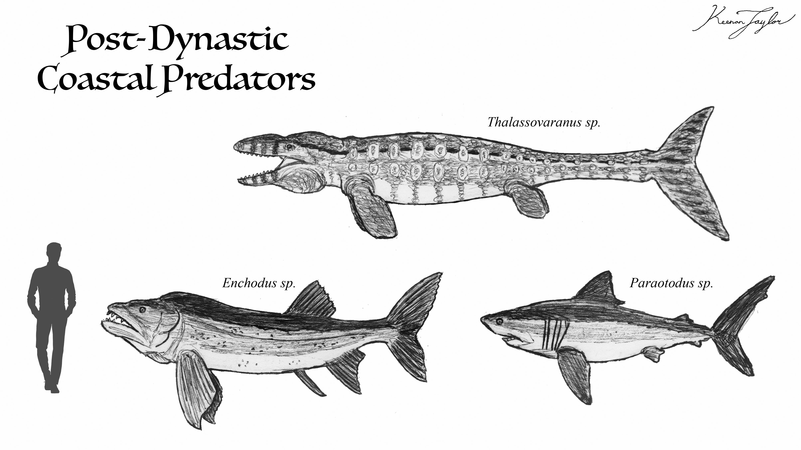
The Middle Miocene Harvest profoundly altered the competitive structure of Kaimere's marine ecosystems. The abundance of newly introduced marine mammals provided an extensive food resource for existing predators, while the recovering marine environment offered opportunities for large incoming predators to establish themselves.
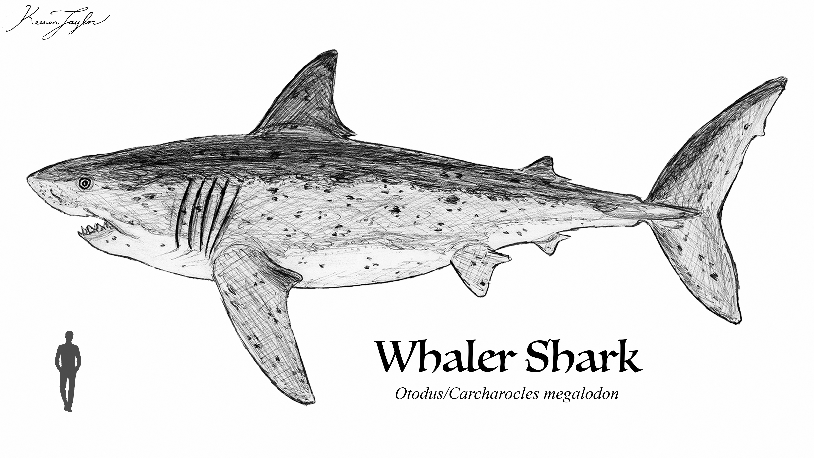
Among the most consequential was Otodus megalodon.
Although the species had already evolved into a formidable marine predator on Earth, Kaimere provided ecological conditions that allowed it to achieve its greatest known potential. The nutrient-rich waters and extraordinary abundance of marine prey supported individuals reaching approximately fifteen to twenty meters in length.
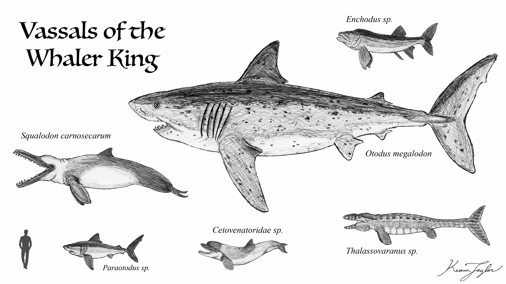
Megalodon became the undisputed apex predator of the Warring Clades marine ecosystems. Cetaceans, pinnipeds, sirenians, desmostylians, and other large marine animals were all potential prey. The enormous productivity of Kaimere's coastal waters allowed these sharks to maintain substantial populations while exerting considerable predatory pressure across multiple marine food webs.
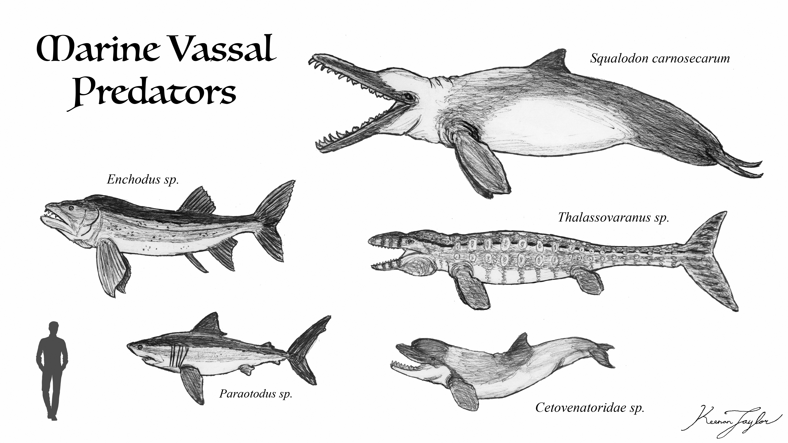
The resulting marine ecosystem was exceptionally competitive. Below the apex position occupied by megalodon, large cetaceans and other predators competed intensely for access to prey. Squalodonts, macroraptorial sperm whales, and several other introduced predators occupied this intermediate tier, while smaller sharks and marine reptiles exploited additional resources.
Megalodon remained unmatched throughout the Warring Clades period. Its eventual displacement from the apex position would require subsequent evolutionary developments, including later cetacean introductions and the expansion of the marine mosasaurs.
Although megalodon remains one of the largest marine predators known from Kaimere, its dominance during this interval was particularly pronounced. The combination of abundant prey, limited competition from other predators of comparable size, and the productivity of the recovering seas created conditions under which the species could achieve extraordinary population sizes and body dimensions.
10 · Return of Ornithiscians, Sauropods, and Theropods
Recovery of Native Dinosaurian Fauna
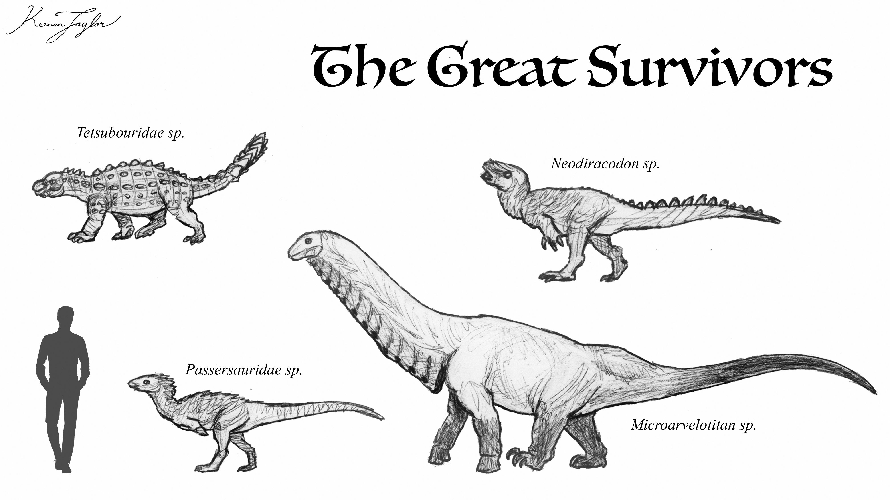
Although the harvest is primarily associated with the introduction and expansion of mammals, its consequences cannot be understood without considering the simultaneous recovery of Kaimere's native dinosaurian lineages.
The Dynastic Extinction had devastated the large dinosaurian communities that previously dominated the Known World. Many of the specialized families that had evolved during the Tyrant Dynasty disappeared, while surviving members were generally small-bodied and occupied comparatively restricted ecological niches.
Thescelosaurs in Ni'Khar and the elasmerians, and parankylosaurs of Arvel were among the surviving herbivorous dinosaurs. During the extinction itself, some of these animals were approximately the size of domestic dogs. By the time of the Middle Miocene Harvest, however, their descendants had increased considerably in size, with some approaching the dimensions of ponies.
The arrival of large mammalian herbivores initially restricted the expansion of these dinosaurian populations. Gomphotheres, chalicotheres, rhinoceroses, and camels occupied many of the most productive large-herbivore niches, forcing surviving dinosaurs to exploit alternative resources and habitats. Nevertheless, the dinosaurian lineages continued to diversify. Their evolutionary recovery was particularly important because the initial mammalian dominance was not accompanied by a permanent disappearance of native competitors.
Small sauropods also survived in Arvel. These animals remained relatively modest in size, generally weighing less than a few tons, and occupied habitats where competition with the incoming mammals was less intense. Their subsequent history changed considerably with the arrival of keratoderm titanosaurs from Kairul several million years later. The introduction of this much larger sauropod lineage eventually displaced the smaller native forms into more marginal environments, particularly highlands and isolated regions.
Theropod Recovery
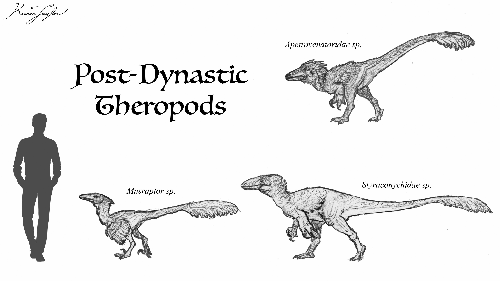
The recovery of predatory dinosaurs was similarly gradual.
Dromaeosaurs were among the first theropods to establish themselves successfully. These animals were not the highly cursorial cockatrices that would later become the dominant mesopredators of the Known World. Instead, they represented more basal forms with predominantly ambush-oriented hunting strategies. Their relatively small body sizes initially limited their ability to compete directly with the large mammalian predators introduced during the harvest. Many remained small, exploiting prey that was either inaccessible or uneconomical for larger carnivores. Their survival was nevertheless important. Dromaeosaurs retained a substantial presence throughout the early Warring Clades period and eventually became important components of the increasingly complex predator communities.
The evolutionary origins of modern Kaimeran megaraptorans are more complicated. The large megaraptorans of modern Kaimere are generally considered descendants of theropods resembling Megaraptor or Australovenator. However, the lineages that occupied Arvel during the Tyrant Dynasty appear to have been among the casualties of the Dynastic Extinction.
Two distinct clades of relatively small predators, measuring approximately two to four metres in length and generally weighing less than one hundred kilograms, have been identified in formations both preceding and following the extinction. These animals are considered possible ancestors of the two major modern megaraptoran families, Styraconychidae and Apeirovenatoridae. Their precise phylogenetic position remains uncertain. Some palaeontologists consider them basal megaraptorans, while others suggest that they may represent very primitive tyrannosauroids. Their relatively small size and generalized anatomy have encouraged comparisons with early tyrannosauroid forms such as Dilong and Eotyrannus.
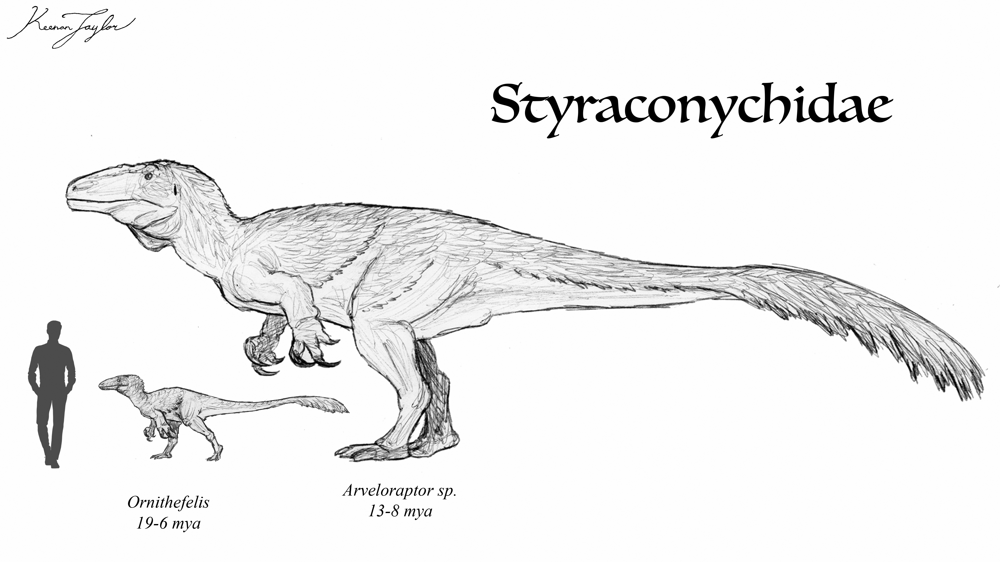
Whatever their exact relationships, these small predators underwent an extraordinary increase in body size during the early post-harvest interval. The styraconychids were particularly successful. Within approximately a million years, their descendants had expanded from animals weighing a few hundred pounds to predators exceeding several tons. The genus Arveloraptor represents the most conspicuous example of this radiation. Reaching approximately thirty-five feet in length and four tons in body mass, these animals rapidly became formidable predators capable of challenging the largest mammalian herbivores.
Their emergence fundamentally altered the competitive structure of the terrestrial ecosystems. Gomphotheres and giant chalicotheres, which had initially encountered relatively limited predation pressure, now faced predators capable of bringing down large-bodied adults. This development marked the beginning of a more balanced competitive relationship between native dinosaurs and introduced mammals. Although mammals had initially dominated the large terrestrial niches following the harvest, the recovery of theropods increasingly restricted their ecological opportunities.
11 · The balance between predators
Partitioning of Predators
The period immediately following the Harvest represents an unusual stage in Kaimere's evolutionary history. For approximately half a million years, mammals occupied a proportion of the large terrestrial ecological niches comparable to that of dinosaurs.
These animals established populations in freshwater environments throughout the recovering Known World. Their introduction added to the diversity of crocodilian predators already present in Kaimere and provided another group capable of exploiting the extensive wetlands that developed following the Dynastic Extinction.
This arrangement was facilitated by several interacting circumstances. The Dynastic Extinction had eliminated many of the large dinosaurian specialists, while the incoming mammals were introduced as established populations with considerable ecological versatility. The recovering vegetation supported extensive herbivore populations, and the relatively limited presence of large native predators initially reduced the mortality pressures experienced by incoming mammals.
The subsequent expansion of amphicyonids, chalicotheres, and gomphotheres demonstrated the capacity of mammals to exploit ecological vacancies rapidly. These animals were not simply occupying the small-bodied niches traditionally associated with mammals during the Tyrant Dynasty. They were becoming major components of the megafaunal communities and, in certain environments, the dominant large animals.
Nevertheless, the apparent mammalian advantage was temporary. The surviving dinosaurian lineages were undergoing their own adaptive radiations, and several groups were beginning to recover the body sizes and ecological specializations lost during the extinction. The expansion of megaraptorans was especially important, as it introduced predators capable of challenging the largest mammalian herbivores.
The result was a highly dynamic ecological environment in which neither mammals nor dinosaurs possessed a permanent advantage. Competition occurred across numerous ecological levels, from small terrestrial predators to the largest herbivores and apex carnivores.
This period is consequently referred to as the Warring Clades, reflecting the unusually intense competition and evolutionary turnover among the major animal lineages of the Known World. The term should not be interpreted as suggesting that all interactions were direct contests between mammals and dinosaurs. Rather, the period was characterized by the rapid diversification of numerous lineages, the establishment of new predatory relationships, and the repeated replacement of ecological dominants. The Middle Miocene Harvest was the principal biological catalyst for this restructuring, introducing many of the mammalian groups that would participate in the subsequent evolutionary competition.
12 · stabalization
Biogeographical Legacy
The modern distribution of organisms introduced during the Harvest reflects the considerable geographical and ecological changes that occurred during the subsequent twelve million years.
Although the majority of the original introductions have disappeared from the Known World, their descendants remain important components of its biodiversity. Gomphotheres, rhinoceroses, horses, camels, tapirs, and several carnivorous mammalian groups established evolutionary lineages that continued to diversify long after the initial harvest.
The botanical legacy is similarly extensive. Village cypress, Morningstar pines, and Pakardiant redcedars represent important surviving elements of the original North American flora. Their descendants became particularly significant in the vegetation of the modern southern continent and its associated wetlands and forests.
The western forests of Arvel are especially important for understanding this legacy. Their isolation by the development of extensive desert environments preserved a number of lineages that disappeared elsewhere following the subsequent ecological turnovers. The forests therefore represent a biological refuge for organisms descended from the original Middle Miocene introductions.
The wider Known World underwent a more complete replacement of its original mammalian assemblage. Repeated harvesting events, particularly those involving the introduction of invasive organisms and their associated diseases, contributed to the disappearance of many older lineages. The resulting ecological turnover was not necessarily a reflection of inherent evolutionary superiority. Rather, the repeated arrival of new organisms created circumstances in which established populations were increasingly vulnerable to competition, disease, and changing environmental conditions.
The modern distribution of mammals in Kaimere must therefore be understood as the product of successive introductions rather than a single evolutionary radiation. The Middle Miocene Harvest established an important foundation, but later events repeatedly transformed the ecological communities that had developed from it.
13 · What matters from the dirt
Palaeontological Significance
The Harvest is among the better-documented ancient harvesting events because of the exceptional abundance of fossils recovered from the formations immediately following the Dynastic Extinction.
The concentration of introduced taxa within a relatively narrow geological interval provides substantial evidence for a major biological introduction. The simultaneous appearance of North American plants, terrestrial mammals, and marine organisms is particularly compelling, as it is difficult to explain through ordinary dispersal or independent evolutionary convergence.
Nevertheless, considerable uncertainty remains concerning the precise composition of the original harvest. Some lineages are represented by abundant and exceptionally complete specimens, while others are known only from isolated teeth, fragments of skulls, or incomplete postcranial material.
The distinction between original Earth species and their early Kaimeran descendants is also complicated by the rapid evolutionary changes that occurred during the initial post-harvest interval. Several groups appear to have undergone substantial diversification within only a few hundred thousand years, meaning that the earliest identifiable Kaimeran representatives may already have differed considerably from their original ancestors.
Marine palaeontology presents additional difficulties. The distribution of cetaceans and other marine organisms is often reconstructed from relatively isolated coastal formations, and the absence of certain lineages from particular regions does not necessarily indicate that they were absent from the original harvest.
Despite these limitations, the overall chronology is considered relatively secure. The introduction of the major North American assemblage is consistently associated with the geological interval approximately 14.2 million years ago, while the subsequent appearance of additional South American organisms corresponds to the later harvest approximately 13.7 million years ago.
The relationship between these events and the preceding Dynastic Extinction is particularly important. The Middle Miocene Harvest was not an isolated introduction into a stable ecosystem. It was the biological response to one of the most extensive ecological disruptions in Kaimere's history. Its success was therefore inseparable from the conditions created by the preceding extinction.